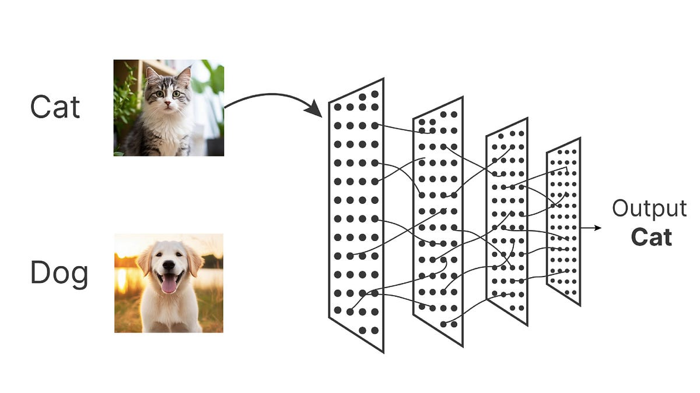
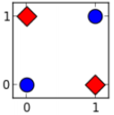
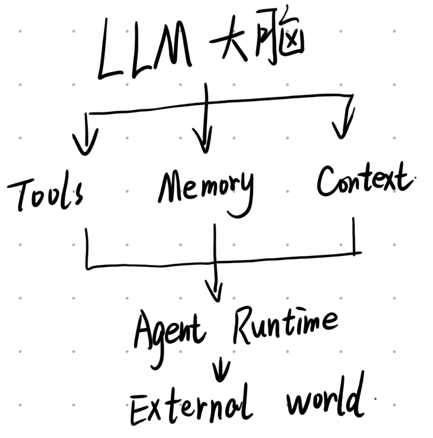

AI是什么
很多人第一次接触 AI，会同时看到一堆名词：ML、DL、Transformer、LLM、Embedding、RAG、Tool Calling、Agent、MCP、Harness……
它们看起来像完全不同的技术，实际上可以把它们理解成一条逐渐堆起来的技术链：
ML → DL → Transformer → LLM → RAG / Tools / Memory → Agent → Harness → 完整 AI 应用
这篇文章的目标不是教你训练模型，而是建立一张AI 世界地图：你看见一个 AI 产品、一个 AI Agent 或一篇 AI 技术文章时，能够知道它到底由什么组成、每一层在解决什么问题，以及自己什么时候应该用它。
AI到底是什么
AI,全称Artificial Intelligence,中文名称人工智能,其实是一个非常大的概念。
其实AI早在上世纪50 60年代就已经出现了。1956年的Dartmouth会议标志着人工智能作为一个研究领域正式诞生。
可能有的读者学习过机器学习或者深度学习,认为这就是AI,实则不然。我们一般认为:让机器表现出需要人类智能才能完成的行为的能力。这就算人工智能了,至于机器内部是死记硬背、逻辑推理、统计学习还是神经网络，并不影响它是否被称为 AI。
我们简单的把AI分为两块,一块是基于机器学习的,一块是基于人类设定的规则的一些方法,例如规则系统。
Machine Learning：让机器从数据中学习
在早期的AI时代，我们主要流行的是符号人工智能，思路很简单：把人类的知识和逻辑，用计算机能理解的符号手动编写进去，但是这种方式有一个致命的缺点，我们拥有着太多的规则，可能规则之上还有规则，根本编写不完。这也是AI早期陷入瓶颈的原因之一。
传统的编程都是基于”规则+数据 \rightarrow 结果”
但是机器学习不想这样，既然规则人工写不完，就让机器自己学习吧！这就是学习二字的由来，我们依据”历史数据+正确答案”的组合，通过训练，得到一个模型，使其在获得新的数据时，可以预测出大概率正确的答案。
这就是机器学习的核心思想。模型本质上是在学习一个输入到输出之间的映射关系。这也是为什么机器学习模型可以泛化到没有见过的数据。
Deep Learning：机器学习的一次巨大升级
Deep Learning，深度学习，应该很多读者都听过其大名。但是其本质上，是Machine Learning 的一个重要分支，核心使用多层神经网络从数据中自动学习复杂表示。
深度学习是使用具有很多层的神经网络学习复杂的数据模型。

这是一个非常简单的深度学习模型，我们把图片中的像素数据逐步转换成我们想要的输出，其中的连线是权重，可以理解为，这个两个位置之间应该传输多少信息过去？
训练的本质就是找一组参数，让模型预测结果越来越正确。如果错误了，就调整参数，循环多次就会得到我们想要的模型了。当然这边说的很简单，实际上会遇到许多问题，我们这边是针对小白的讲解，就不深讲了。
实际上深度学习发展过程中遇到过两次寒冬，第一次是大家发现，吹的很厉害的感知机，实际上无法解决线性不可分问题，例如XOR异或问题，如下图所示，你能用一条线把同一类的点分到同一侧吗？

第二次是在硬件计算能力不足、训练数据不足以及网络深度受限时，BP算法会面临梯度消失或振荡等问题。加之80年代后期到90年代初期专家系统热潮退却，资金和人力投入也随之骤降，引发了第二次AI寒冬。
那深度学习为什么在现在这个时代这么强大呢？
大概有三个原因：
- 数据：互联网产生了大量的数据，例如文本，图片，视频，代码，语音等，这些都是深度学习训练的重要燃料
- 算力：尤其是GPU,TPU等发展，神经网络的大量计算，本质上是简单的矩阵运算。GPU的发展很大的程度上促进了AI的发展
- 模型：研发出了许多模型，如CNN,RNN,LSTM,Transformer，Diffusion等，其中 Transformer 对今天的生成式 AI 影响最大。
Transformer：今天 LLM 世界的关键转折点
2017年，Google发布了一篇论文：《Attention Is All You Need》,提出了Transformer，今天绝大多数主流 LLM 都建立在类似 Transformer 的架构思想上。
Transfomer中存在一个重要机制叫:Attention
可以简单理解成,模型在处理一个词时，会动态判断上下文哪些信息最重要。例如”小明把苹果放在桌子上，因为它很重。“，这时候模型就需要判断，它是指的前面的哪个词？Attention 就帮助模型建立这种关系
模型需要根据上下文计算相关性。Attention 就是在帮助模型处理这样的关系。
Transformer 非常适合：大规模训练，并行计算，学习长距离上下文关系，扩展模型规模以及处理语言等序列数据。
于是出现了一个极其重要的趋势：我们使用更多的数据，更大的模型，更多的计算，更好的训练方式得到更强的模型能力，这条路线后来发展出了今天大家熟悉的LLM
LLM：Large Language Model
LLM = Large Language Model，大语言模型。
例如今天大家熟悉的各种 GPT、Claude、Gemini、Deepseek、Kimi 等，都属于大型语言模型家族中的不同模型或系列。
最简单的理解：LLM 是一个经过海量文本和其他数据训练，能够理解和生成自然语言的模型。我们一般都用过简单的LLM模型，你可以输入帮我写一个 Python 快速排序，一般的LLM模型都可以帮你直接输出Python代码。这是我们最常用到的AI形式。
很多 AI 小白第一次使用 ChatGPT 时，会觉得：它是不是背后连接了互联网，所以什么都知道？
我们可以说不全是，因为有的模型还是可以链接互联网补充，但是其最基层的核心工作方式是根据已经学到的参数和当前输入上下文，对下一步最可能产生的内容进行预测和生成。实际上输出概率最大的内容，模型并不知道其具体内容。
我们可以粗略的理解LLM模型：
- 我们使用training data 对我们的模型进行训练，获得合适的model parameters
- 在我们拥有合适的model parameters时，当我们输入给模型一些提示词(prompt),且模型会结合上下文内容(context)，模型就会输出合适的结果。
因此，LLM 可能存在：知识截止问题，幻觉，数据缺失，私有数据不知道，最新信息不知道等问题。如果你常常与AI聊天，这些问题一般都会遇到过。于是，我们需要另外的技术。
RAG
RAG：给 LLM “开卷考试”
RAG = Retrieval-Augmented Generation，中文通常叫检索增强生成。这是理解现代 AI 应用非常重要的一步。
一句话理解：不要要求 LLM 把所有知识都记在脑子里，而是在回答之前，先从外部知识库找到相关信息，再让 LLM 基于这些信息回答。
也可以把它理解成LLM + 检索。
为什么需要 RAG？
我们来举一个简单的例子给你详细分析一下RAG的具体作用是什么。
假设你的公司有1000 份 PDF；500 份内部文档；10000 条知识库记录；100 个产品说明。
我们使用普通的LLM模型，可能你会问他：“我们公司的退款政策是什么？”，有可能你的公司是一个非常大的公司，你有可能能获得你想要的答案，但是一般来说也不完全，或者版本不够新。
RAG想要解决的问题就是这类问题。
- 他们会把用户的问题放入Retriever(检索器)，其负责从外部知识库中召回与问题最相关的文档片段。
- 然后当我们找到相关的文档以后，RAG会把相关的文档内容放入context中
- 这时候我们再把我们获得的信息放入LLM中，得到我们想要的输出。
RAG 并不是把整个数据库塞给 LLM
通常我们的文本LLM并不能理解，他一般要通过Chunking讲文本内容转换成几块内容，然后再使用Embedding。
这个操作可以简单的理解为：把文本、图片等信息转换成一个能够表达语义关系的向量。
通常 LLM 会通过 Tokenization 将文本切分为 Token，再经过 Embedding 层转为向量表示。在 RAG 系统中，长文档先经过 Chunking（分块） 处理，然后每一段分别通过 Embedding 模型编码为向量存入向量数据库。当用户提问时，问题也会被编码为向量，Retriever 通过在向量空间中搜索近邻来召回相关文档片段。
我们例如有两个词，一个是”苹果手机”，一个是”iPhone”，虽然字面完全不同，但语义非常接近。Embedding 的目标之一，就是让这种语义关系能够体现在向量空间中。当然我们这边弱化了Chunking的作用。你只需要理解，我们会把模型无法理解的语言转化为模型可以理解的向量。
于是可以做，把用户问题Embedding成一个向量，然后我们搜索相关的向量，找到相关的文档。这一步就是retriever要做的事。
我们如何能找到相关的向量呢？这时候我们就要引入一个概念：Vector Database（向量数据库），其就是帮助我们高效保存和搜索这些向量。其可以查询时计算向量间的距离（如余弦相似度）， 返回最相似的 Top-K 结果
RAG 解决什么问题？
其一般适用于私有知识，例如公司内部 Wiki，产品文档等；以及一些经常变化的数据，如最新政策，新闻等；以及希望回答有依据的问题，例如根据公司的员工手册回答： “试用期可以请多少天病假吗？”，这时候RAG 比单纯问 LLM更加合理。
但是要注意，RAG可能会发生检索错误的情况，拿到了错误的文档，LLM 基于错误信息生成，仍然得到错误答案。所以RAG 本身并不等于准确。更高质量的RAG需要考虑其他更深层的方法，此处就不多赘述了，因为我们的文章只是简单科普用的，如果有兴趣可以自行前往搜查。
Tool Calling：让 LLM 不只是说，还能调用
到这里，我们遇到另一个重大变化。
通常来说，普通的LLM，只会根据用户的输入，得到输出的文本。但是如果用户问：“帮我查一下今天上海天气。”LLM 单靠自己可能无法获得实时天气。所以我们可以给它一个工具，例如为get_weather(city)，然后我们可以得到以下的流程：
- User把问题发给LLM，LLM发现这个问题调用工具
get_weather(city)； - 调用
get_weather(city)后，获得天气，并告诉给LLM； - LLM 最终回答，告诉User最终的答案
这就叫Tool Calling 或者 Function Calling，它是理解 Agent 的关键。
一个Tool，本质上就是：LLM 可以调用的外部能力。
例如搜索网页，查询数据库，发送邮件，执行python，操作浏览器等等。可以把LLM想成大脑，而Tool就是手和脚了，虽然你是问的LLM，但是真正执行的是外部工具/API/程序。
LLM + Tools = Agent 的起点
Agent 最简单的理解：一个能够使用 LLM 进行决策，并调用工具与外部环境交互，从而完成目标的软件系统。
OpenAI 对 Agent 的定义也强调：Agent 不只是生成答案，而是能够代表用户执行任务，并通过模型、工具和指令共同完成工作。
我们在这假设一个情形，你可能说：“帮我安排下周去北京的商务旅行。”
一个Agent可能就需要：
- 查询你的日历
- 查询航班
- 查询酒店
- 比较价格
- 检查会议时间
- 形成旅行方案
- 等待你的确认
- 预订
- 写入日历
这样就可以完成一个简单的任务了。
Agent 的核心不是会聊天，而是能够为了完成目标持续采取行动。OpenAI 当前的 Agent 指南也把模型、工具和 instructions 视为 Agent 的核心基础组件，并强调 Agent 通常通过循环不断调用模型和工具，直到满足完成条件。
Workflow 和 Agent 又是什么关系？
这个区别非常重要。假设我们需要生成一份市场报告。
对于Workflow，我们是提前规定：Step 1：搜索新闻；Step 2：提取文章；Step 3：总结；Step 4：生成报告。每一步都是程序写死的。
这就叫Workflow。Anthropic 对两者的一个经典区分是：Workflow 的路径主要由预先定义的代码控制，而 Agent 则允许 LLM 动态决定下一步怎么做、调用什么工具。
所以 Agent 的智能来自哪里？
我们前面可能容易产生误解，Agent 本身是不是一个新的超级模型？其实不是的。
一个Agent往往是：

所以：Agent 的能力 = 模型能力 + 工具能力 + 上下文 + 状态 + 编排 + 安全机制 + 环境。
这也解释了一个非常现实的问题：同一个 LLM，可以做出完全不同能力的 Agent。因为外围系统完全不同。
Memory：Agent 为什么需要记忆？
我们简单的说，LLM+Memory可以提供更长期的连续任务能力。
但需要注意的是，Memory 并不等于把所有历史对话永久塞进 Prompt。
真正的生产系统通常会对历史信息进行选择，然后进行内容压缩后，存储，需要时进行检索，注入context。我们可以发现，这其实与RAG在思想上其实有很强的相似性，只是提供的信息变成LLM自己生成的信息。
但是，RAG重点是：“我去哪里找知识？”,例如公司知识库，产品文档，网页，数据库等。
而Memory重点是：“我记得关于这个任务的什么信息？”，例如用户偏好，过去的任务，当前任务状态，之前做过的决策。
两者可以结合，RAG用于查知识，Memory用于记事情。
Model Context Protocol
Model Context Protocol(MCP)，可以把它理解成一种：让 AI 模型/Agent 更标准化地连接外部工具和数据源的协议。
传统方式可能是：GitHub API，Google Drive API等等，当工具越来越多之后，连接会越来越复杂。MCP 的目标之一就是让工具、资源和模型之间的连接变得更加标准化。
可以的粗略理解为：MCP 并不是 Agent 本身。更接近于Agent 连接外部世界的一种标准接口。
Anthropic 的 Agent 指南也把 MCP 作为连接第三方工具生态的一种方式，并把它放在“增强型 LLM”向 Agent 系统扩展的工具连接层中。
Harness
“Harness” 是最近 Agent 领域越来越常见，但也最容易被误解的词之一。它原本不是 AI 专属词。
在 Agent 领域，它大致可以理解为：围绕 LLM 的一整套软件运行框架，让模型能够稳定地使用工具、管理上下文、保存状态、执行任务、处理错误和受到安全控制。
Google Cloud 对 Agent Harness 的定义也强调，它位于模型外围，为模型提供工具调用、记忆、多步骤任务执行，以及数据检索、工具执行和结果反馈等基础设施。
近期行业里常见的一种概括是：Agent = Model + Harness ，这一点就可以与我们前面那一部分结合起来了。但这不是一个严格统一的学术公式，而是一种很实用的工程视角。
Harness 不是一个简单的 SDK。更准确地说，它是让模型变成可工作的 Agent的运行环境和软件脚手架。
2026 年围绕 Agent Harness 的讨论已经明显增多，行业定义大多都围绕模型外围的软件基础设施展开，包括工具、上下文、记忆、状态、安全和任务执行等能力。
Guardrails：为什么 Agent 越强，安全越重要？
如果一个普通 LLM 犯错：“写错了一段代码。”常问题不算严重。
但是Agent如果能够部署服务器，修改生产代码等管理到重要内容的权力，那么错误的代价会非常大。所以 Agent 必须有：Guardrails（护栏/安全控制）
例如：
- 读取文件 -> 自动执行
- 发送邮件 -> 需要确认
- 删除数据库 -> 禁止
- 支付10000元 -> 人工审批
- 修改Production -> 人工批准
OpenAI 的 Agent 指南也明确强调，多层 Guardrails、权限控制以及高风险动作的人类介入，是生产 Agent 的重要组成部分
Observability：AI 系统也需要监控
传统软件我们会看：CPU， Memory等
Agent系统还要看，LLM 调用了几次？Token 用了多少？哪个 Tool 最慢？为什么一直重复调用工具？等等。所以现代 Agent 工程里：Tracing / Logging / Observability / Evaluation会越来越重要。
AI 工程正在逐渐从“Prompt Engineering”走向“Evaluation Engineering”。
今天的大多数 AI 应用，本质上是在模型外面不断增加能力。
额外补充：Skill
Skill ≠ Tool。
Tool 是能力，一个 Tool 通常是一个具体动作。
而Skill 是做事情的方法，不是一个单独的 Tool。而是：一套让 Agent 知道“如何完成某类工作的知识、流程、规则和最佳实践”。